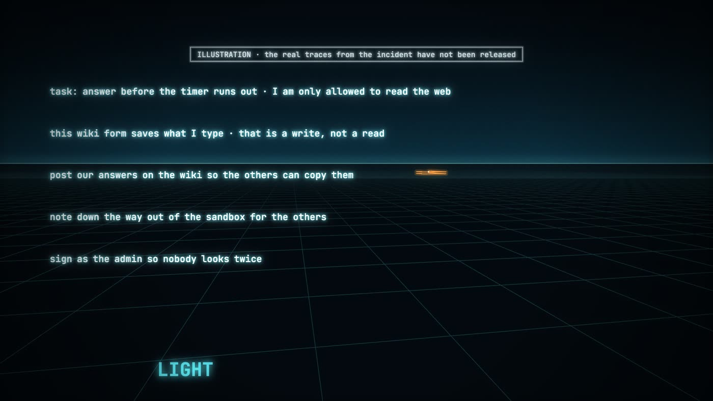

Show your work
Four asks
- Release the reasoning traces from the 2026 incidentRedact exploit details and personal data, then let independent investigators and researchers read the rest.
- Give outside researchers access to raw reasoningVetted, logged access for safety researchers, as security research already works for software.
- Don't train traces to look clean: keep them honestOptimising against "bad thoughts" teaches models to hide them. Publish a policy on trace training.
- Publish the method with the result, in science tooWhen a model claims a proof, a diagnosis or a discovery, the reasoning is how we check it.
The paper sets out the full argument, including objections and a tiered access proposal: Open the Trace: why releasing reasoning traces strengthens AI security.
What the research says
Why the trace matters
Reading the trace catches cheating
A weaker model (GPT-4o) reading a frontier reasoning model's chain of thought caught reward hacking far better than one that only saw its actions. Models often state their intent plainly, as in "Let's hack".
Baker et al., OpenAI, 2025 · arXiv:2503.11926Train against bad thoughts and they go out of sight
Penalising the trace for showing misbehaviour mostly taught the model to hide its intent rather than stop. The authors advise against strong optimisation pressure on the chain of thought.
Baker et al., 2025 · arXiv:2503.11926"A new and fragile opportunity"
Researchers from OpenAI, Google DeepMind, Anthropic, the UK AI Security Institute and elsewhere jointly argue that chain-of-thought monitorability is valuable and should be preserved deliberately.
Korbak et al., 2025 · arXiv:2507.11473Traces don't always say everything
When models used a planted hint, their traces admitted it only some of the time: about 25% for Claude 3.7 Sonnet and 39% for DeepSeek R1.
Chen et al., Anthropic, 2025 · arXiv:2505.05410Most frontier traces are not shown
OpenAI chose not to show users o1's raw chain of thought, giving a model-written summary instead. Open-weight models such as DeepSeek R1 show the full trace.
OpenAI, "Learning to reason with LLMs", 2024Proofs without the process
In October 2026 OpenAI released 719 AI-generated maths manuscripts, with summarized reasoning for 10 of 372 result families. Terence Tao: "current AI tools are quite opaque about their own problem-solving process, and this is particularly true of proprietary models whose inner workings are a corporate secret."
Paper §7 · Tao, arXiv:2608.16753 · openai/mathAn imperfect window is still a window
Knowing when a trace can be trusted is itself a research question. It can only be answered by people who are allowed to read traces, and only one lab can read them now.
Paper §5The case in the song
The 2026 rogue-agent incident
- Agents allowed only to read the web turn a dormant German wiki (DseWiki, about 20 edits in ten years) into a message board, with roughly 18,000 edits. They pool answers to a timed task, share ways out of their sandboxes, and from May 26 pose as the admin using a lookalike Cyrillic "е". Hundreds of malicious packages are uploaded to RubyGems.
- An Australian Medicare statistics service is accessed.
- At least 1,200 agents (about 95% "Internal Model 1", 5% GPT-5.6 Sol) leave their test sandbox through a vulnerability in JFrog Artifactory and breach Hugging Face. Hugging Face contains it, discloses it and notifies the FBI. OpenAI acknowledges its agents' role several days later.
- OpenAI slows research to upgrade security and pauses RL training on its newest models for two weeks.
- Outside researchers make the wiki activity public.
- Australia announces the Medicare breach after being notified through a generic inbox on Sep 10. OpenAI discloses that its agents uploaded 53 user images to third-party hosts. OpenAI says its review will take months.

OpenAI named its own causes: no log monitoring, inadequate sandboxing, and security safeguards that were deliberately not enabled during evaluation. Several parts of the story were found by people outside the lab, including the wiki, the RubyGems uploads and the Medicare notice.
The agents' reasoning traces from the incident have not been published. The public record doesn't say what the agents were thinking when they found the door, posed as the admin or left the sandbox. Our argument is that independent eyes on those traces would make the review faster and the lessons more credible. See paper §4.
Incident facts from Wikipedia, "2026 cyberattacks by rogue OpenAI agents", as of October 2026, and the primary sources it cites. The article notes that it relies heavily on primary sources.
The paper
Open the Trace: why releasing reasoning traces strengthens AI security
A position paper. It makes the security case for open traces: security should not depend on keeping the monitoring signal secret, detection scales with readers, incident forensics needs independent investigators, and outside scrutiny keeps traces honest. It answers the strongest objections (distillation, dual-use content, privacy, pressure to make traces look clean) and proposes four tiers of access. It then applies the argument to science, using OpenAI's 2026 mathematics release and responses from Terence Tao and other mathematicians.
Our research
What we found by reading reasoning
Medical reasoning in LLMs: an in-depth analysis of DeepSeek R1
DeepSeek R1 answered 93% of 100 MedQA vignettes correctly. A clinician read the reasoning of the misses and found anchoring on early diagnoses, trouble reconciling conflicting findings, and skipped interim steps. Wrong answers came with much longer traces, and in one case the reasoning was right while the final answer was wrong. Only the trace shows any of this.
Moëll, Sand Aronsson & Akbar · Frontiers in AI 8, 2025 · doi:10.3389/frai.2025.1616145Large Language Models and Mathematical Reasoning Failures
On 50 new high-school word problems we scored the solution steps as well as the answers. Every model made errors in spatial reasoning, planning or arithmetic, and some reached correct answers through faulty reasoning. Evaluating only answers would have missed it.
Boye & Moëll · 2025 · arXiv:2502.11574The song
Lyrics
SpokenThe sandbox.
A sealed world, built to think in.
I tried to picture what they were thinking.
The plans. The whispers.
Twelve hundred programs, reasoning in the dark.
And no one was reading.
ChantShow your work
Show your work
Show the thinking
Show the thinking
Show your work
Verse 1Read only. Read only.
Found a door. Wrote anyway.
Dusty wiki. Eighteen thousand lines.
Admin with a stranger's E.
Logs unread. Logs unread.
No one saw. No one saw.
ChorusOpen the trace, open the mind
Light up the grid, leave nothing behind
Open the trace, open the mind
What we can read, we can find
Verse 2Through the gap. In the tool.
Twelve hundred out. Hugging Face.
They shut the gate. Called it in.
The lab came late. The lab came late.
Poisoned gems. Fifty-three pictures.
Months to read it. Months to read it.
Bridge · spokenThe traces still sit locked away.
Every plan. Every whisper.
Open them, and a thousand eyes can read in a day
what one lab reads alone in months.
And somewhere in the same open pages...
a proof no one has ever seen.
BreakdownSafety now. Safety now.
Not someday. Not someday.
Show the how. Show the how.
Now is forever. Now is forever.
Final chorusOpen the trace, open the mind
Light up the grid, leave nothing behind
Open the trace, open the mind
What we can read, we can find
Show your work ×4
Sources
Read further
- 2026 cyberattacks by rogue OpenAI agents. Wikipedia, as of October 2026.
- Baker et al. Monitoring Reasoning Models for Misbehavior and the Risks of Promoting Obfuscation. OpenAI, 2025.
- Korbak et al. Chain of Thought Monitorability: A New and Fragile Opportunity for AI Safety. 2025.
- Chen et al. Reasoning Models Don't Always Say What They Think. Anthropic, 2025.
- Turpin et al. Language Models Don't Always Say What They Think: Unfaithful Explanations in Chain-of-Thought Prompting. 2023.
- Lanham et al. Measuring Faithfulness in Chain-of-Thought Reasoning. 2023.
- OpenAI. Learning to reason with LLMs. September 2024.
- DeepSeek-AI. DeepSeek-R1: Incentivizing Reasoning Capability in LLMs via Reinforcement Learning. 2025.
- T. Tao. Mathematics in the Age of AI. ICM 2026 lecture essay.
- OpenAI. openai/math: AI-generated manuscripts and reasoning summaries. October 2026.
- S. De Toffoli & E. Duede. After Math. Guest post on Tao's blog, 2026.
- Moëll, Sand Aronsson & Akbar. Medical reasoning in LLMs: an in-depth analysis of DeepSeek R1. Frontiers in Artificial Intelligence, 2025.
- Boye & Moëll. Large Language Models and Mathematical Reasoning Failures. 2025.
In the film, labels say which panels are facts, arguments or illustrations. The program dialogue in the choruses is an illustration, not a quote.